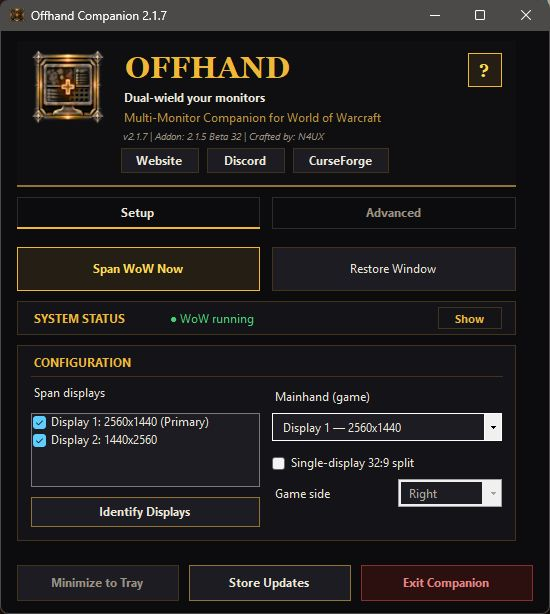
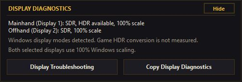
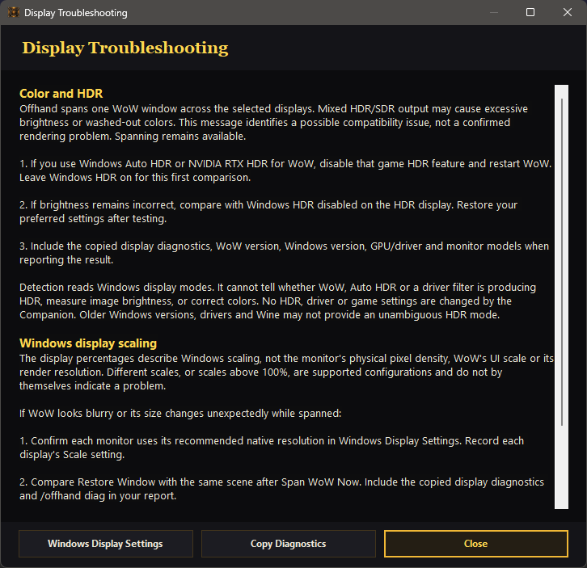

Microsoft Store
Microsoft signs the Store package and Store manages its updates. Install it, then open Offhand Companion from the Start menu.
GET IT FROMMicrosoft StoreMicrosoft Store is the recommended Windows installation. A portable download is available separately.
Microsoft signs the Store package and Store manages its updates. Install it, then open Offhand Companion from the Start menu.
GET IT FROMMicrosoft StoreThe older portable build supports standard and custom layouts and the experimental Linux/Wine path. For panel sizing, use the manual slider in WoW. Extract the ZIP, then run Offhand.exe.
Verify a portable download against the published SHA-256 file and GitHub build provenance. Advanced users can review or compile the MIT-licensed source.
Start in the WoW guide, use Companion to place the window, then return to WoW to finish.

Open Companion. You can skip the optional tour and replay it later from Help → Start Companion tutorial. Launch WoW and log into a character with Offhand enabled. In /offhand guide, choose Use Companion and Already installed, then click Set to Windowed. If unavailable, use Open display settings, select Windowed and apply. Continue to the window-placement step and leave the guide open.
On the Setup tab, select Identify Displays. Windows briefly numbers each screen.
Standard layout is already selected for a new setup. For two full displays, check both under Span displays and select the game screen under Mainhand (game). For an equal ultrawide split, check one 32:9 or 32:10 screen, enable Single-display 32:9 split, and choose Game side.
Use the Two monitors editor in Advanced only when you want part of the second screen.
In Companion, select Span WoW Now at the top of the window. If asked to confirm saved displays, check the game and workspace screens before choosing OK. Cancel if the selection is wrong and correct it with Identify Displays.
Choose Window is positioned, then Reload UI. When the guide returns, click Confirm placement and check the review dialog. Click Start Calibration and follow the calibration and HUD instructions.
Once calibration and HUD setup are complete, exit WoW normally and relaunch it. Apply your span again and confirm that your workspace panels and Mainhand HUD return.
Open Companion after WoW, select Span WoW Now, then select Exit Companion. The window remains in place. This is the lowest-maintenance Companion workflow.
For standard layouts, open Advanced, enable Auto-span WoW on launch, and leave Companion in the tray. Custom layouts require Span WoW Now each time. Adjust the delay only if WoW is still changing display mode when the span is applied.
Leave Companion running when you want it to react to a disconnected monitor, repair the topology handoff, or maintain a Forever compatibility bridge that /offhand diag reports is needed.
Select Restore Window, disable dual-monitor mode in /offhand, then resize or maximize WoW normally. Use /offhand gather if an ordinary panel is inaccessible.
Once standard setup works, use these references if you want a different workspace shape or need help with a control.
The collapsed header gives a short current status, including when monitoring is paused. Select Show to see WoW, addon and layout details. A reminder to reload means you should type /reload in WoW after applying the span or changing Mainhand/layout.
Temporarily labels each physical display so you can select the correct pair and Mainhand.
Defines the displays included in the span. A normal multi-monitor setup uses exactly two.
Marks the display that receives the protected game viewport. The other selected display becomes the Offhand workspace.
Divides one super-ultrawide into a game side and workspace side. Leave it off when using two physical displays.
Applies your selected layout to the WoW window. Review your layout first, click this button at the top, then type /reload in WoW so the addon reads the new geometry.
Watches for WoW to launch, waits for the selected delay, then applies the saved span. Enable it only after a successful manual test.
Returns WoW to its remembered pre-span window when available. A successful restore suspends auto-span for that WoW session; use Span WoW Now to apply the layout again.
Right-click the Companion icon in the Windows notification area (tray), then select Pause background monitoring. Use Resume background monitoring to restart it. Manual Span and Restore remain available while paused.
The title-bar X minimizes Companion to the tray. Exit Companion closes it and leaves the current span in place. Use Help to open setup help, replay the tutorial, or review What’s new.
Choose the symptom that matches what you see. You do not need to work through every item.
Select Restore Window, use Identify Displays, review the selected displays and Mainhand (or edit your custom plan in Advanced → Workspace layout), then apply Span WoW Now again. Re-run /offhand guide only if the intended canvas itself changed.
Companion refuses to collapse a two-display profile onto the remaining screen. While active, it restores a bordered Mainhand window instead. Reconnect the display or review the current layout before spanning again. For custom regions, follow the workspace recovery steps.
Type /reload after a corrected span so the addon reads the current topology. If the issue remains, run /offhand diag full and include its output with your support report. See the in-game diagnostics reference.
Companion reopens with your saved layout. Standard is selected automatically for a new setup.
Close WoW and Companion, then restart both normally at the same privilege level. Do not run only one of them as administrator.
In Advanced, expand Display Diagnostics, then open Display Troubleshooting. Windows display scaling and WoW UI scale are different settings. HDR/SDR advisories provide information and do not adjust your displays. Use Copy Display Diagnostics with your support report.


Companion identifies the visible WoW desktop window, changes its border and dimensions, and gives Offhand the selected display geometry. It does not request administrator access, install a service or driver, inject code, read WoW memory, automate gameplay, collect telemetry, or download and execute code.
Store installations check periodically for updates. Advanced shows the last check. Microsoft Store handles downloads and installation. Portable installations contact GitHub when you select Check for Updates.
The Store package is Microsoft signed. The separate GitHub executable is unsigned, so browsers or scanners may show a reputation or heuristic warning. A clean scan does not prove safety, and a generic reputation warning is not the same as a named malware detection.
For this workflow, Offhand Companion and FancyZones perform a comparable desktop-window-management role. They resize or reposition an ordinary Windowed WoW window and are designed not to automate gameplay, send game input, inspect game memory, inject code, or modify game files.
This is not a guarantee of approval or account safety. Microsoft authorship, Microsoft Store availability, open-source code, security scans, and the absence of gameplay automation do not constitute Blizzard authorization. Blizzard alone interprets and enforces its agreements, and its published EULA states that the platform may monitor for unauthorized third-party programs. Use any desktop utility at your own discretion and stop using it if Blizzard guidance changes.
Read Blizzard's current EULA · Read Blizzard's anti-cheating agreement